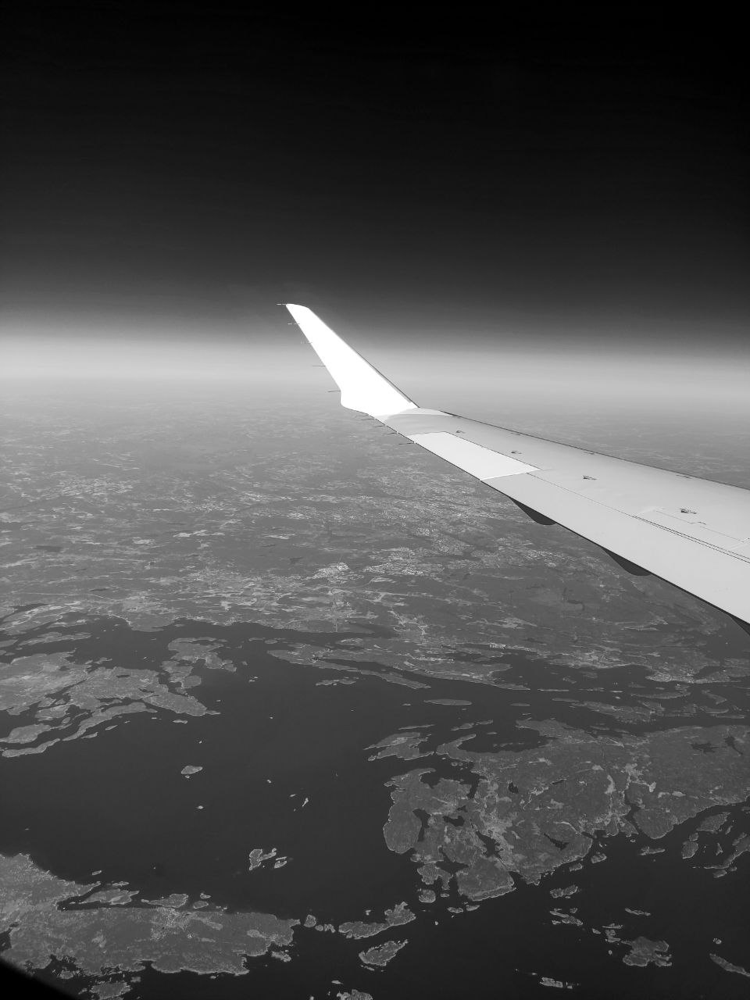
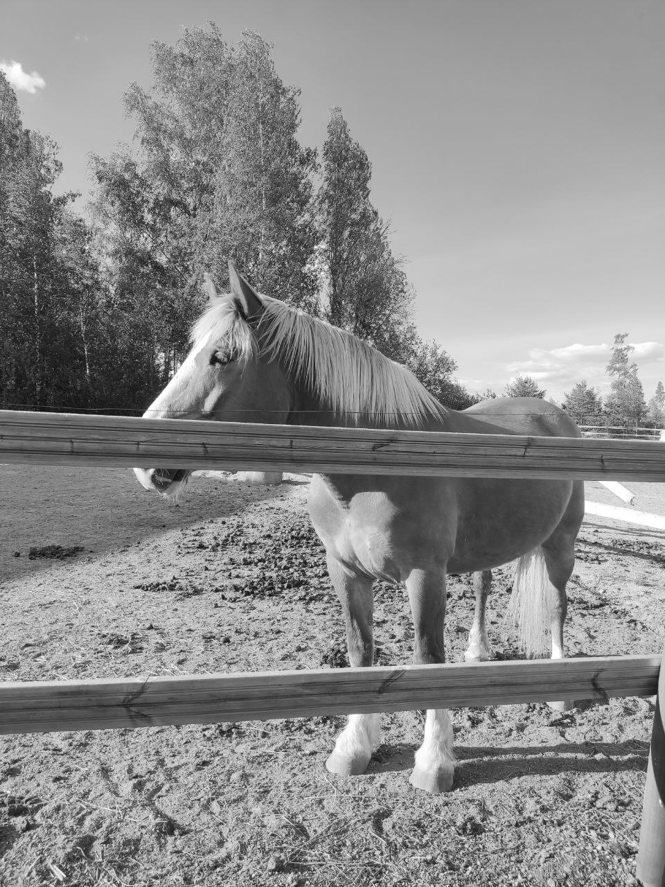
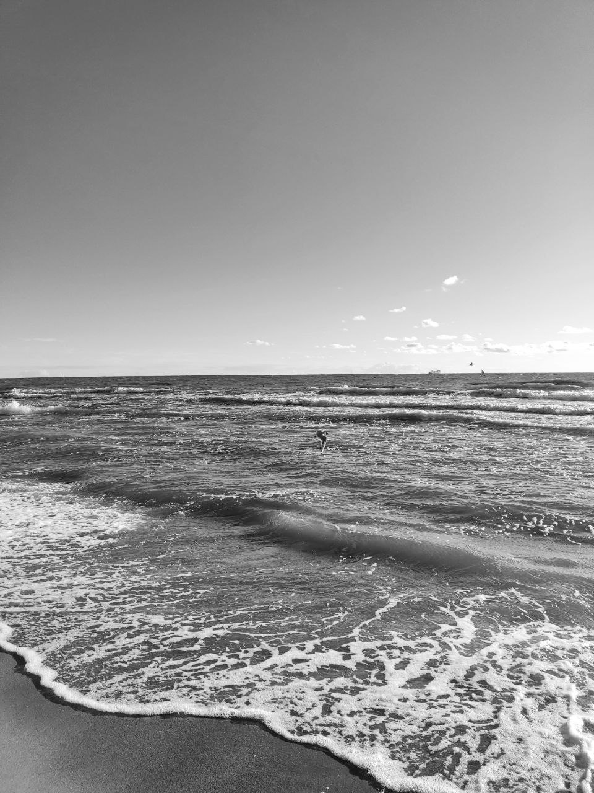

I absolutely love traveling and immersing myself in new cultures. Over the years, I've been fortunate enough to visit several countries in Europe, including Austria, Finland, Germany, Poland, Latvia, Russia, and Norway. Each of these destinations has left a lasting impression on me, and I cherish the memories I've made in each of them.


I absolutely love riding horses, it's been a passion of mine for the past 6 years. There's something truly exhilarating about galloping through open fields and feeling the wind in your hair. It's a hobby that brings me joy and peace, and I can't imagine ever giving it up.

Swimming is something that I truly enjoy. It is not only a great way to stay active, but also a wonderful form of relaxation. Over the past six years, I have found that swimming is not only a physical activity, but also a time for reflection and deep thinking.
I am a big fan of books.Close your eyes and imagine a world where the sky is made of cotton candy clouds and the sun sets in a symphony of colors. In this world, the trees are giants with trunks as wide as houses and leaves as big as elephants. The rivers flow with chocolate milk and the mountains are made of sparkling diamonds. As you walk through this magical world, you hear the sweet melodies of singing birds and feel the gentle breeze on your skin. It's a place where anything is possible and dreams come true.